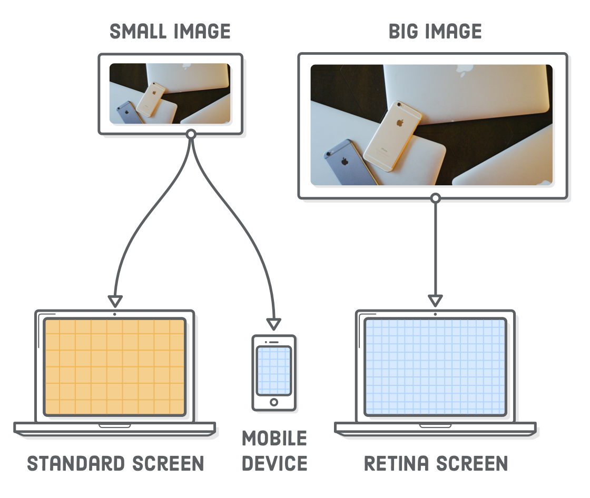
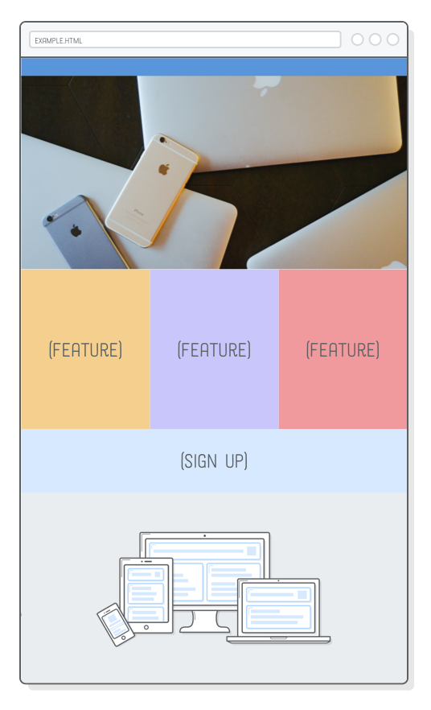
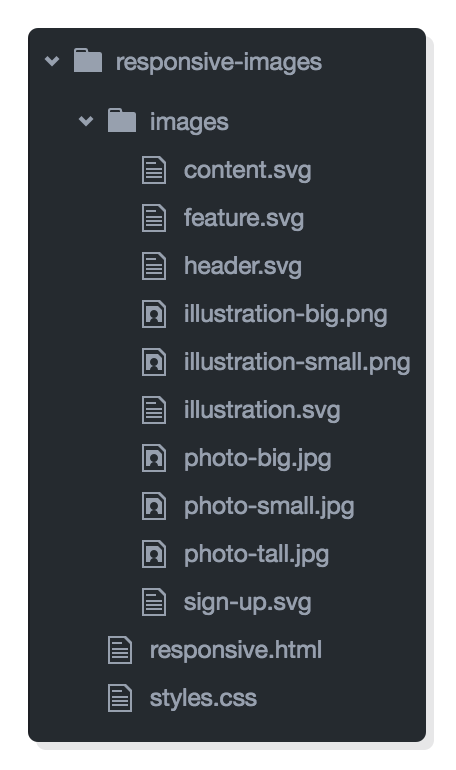
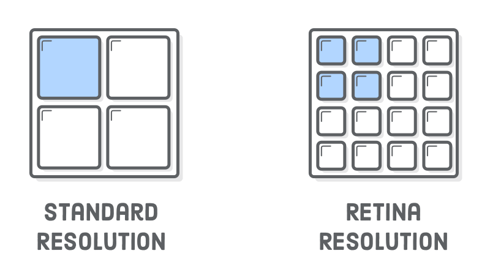
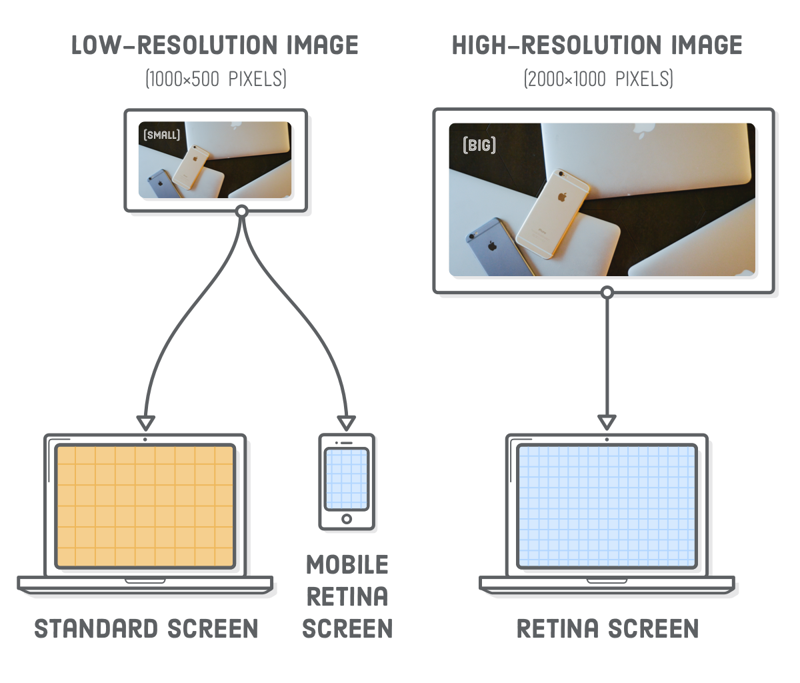
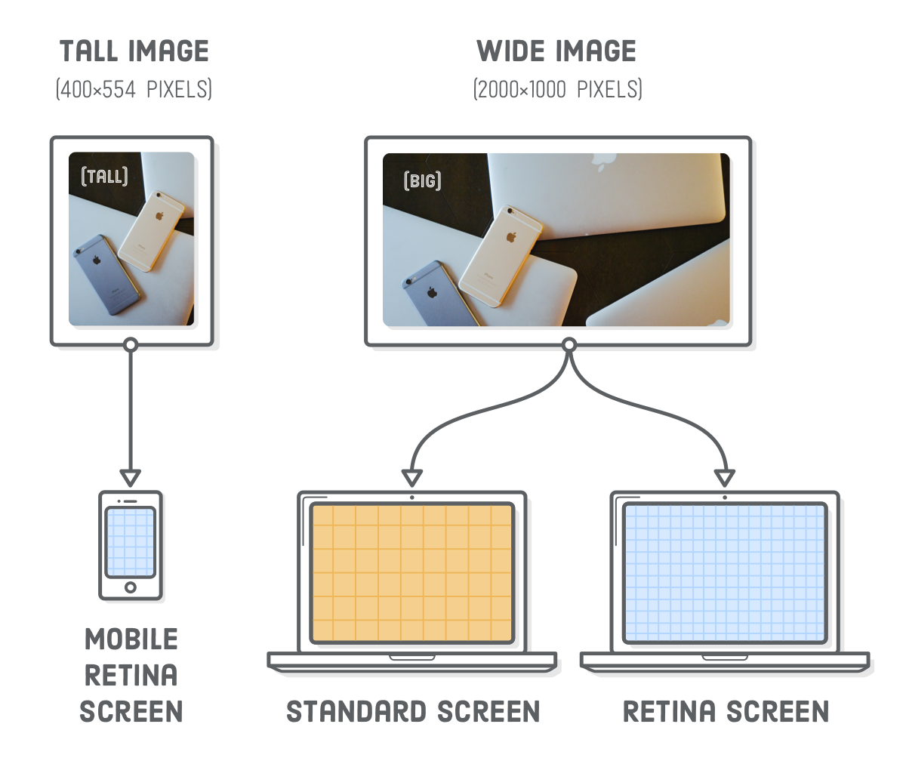
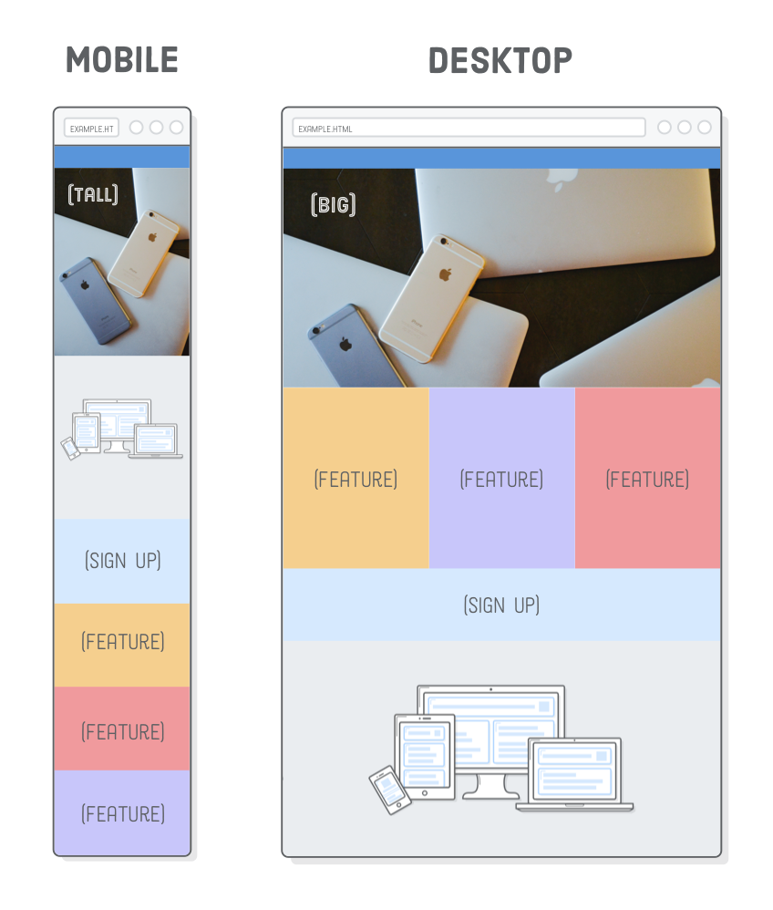

Imagens responsivas são difíceis. Tipo, muito difícil. Mas não
se assuste.
Em Design Responsivo,
aprendemos como utilizar media queries para criar layouts
separados para dispositivos móveis e desktop. Agora, vamos adicionar
imagens na página. Adicionar media queries só permitem
apresentar diferentes regras CSS de forma condicional, queremos
mostrar diferentes imagens baseado em dispositivos diferentes dos
usuários.

O problema é, o tamanho fixo das imagens. Não podemos ampliar uma
imagem que tem 500×250 pixels para nada mais largo que 500 pixels
porque a imagem ficará borrada (pixelada). Dispositivos móveis
e as telas Retina complicam as coisas ainda mais. Para fazer nossas
imagens responsivas, precisamos levar em consideração três coisas
a partir de agora:
A dimensão dos dispositivos
As dimensões das imagens
A resolução da tela do dispositivo
Isso será mais difícil que media queries, que só se
preocupava com a largura do dispositivo. Mas não se desespere,
existem formas padrões de resolver todos esses problemas, e
nós iremos ver todas essas formas, um passo de cada vez.
Configuração
Para experimentar as imagens responsivas, precisamos primeiro de uma
página resposiva para trabalhar. Este capítulo utilizará o exemplo
de página web que criamos no
capítulo anterior.
Vamos adicionar duas imagems a página, para que ela fique como o
exemplo abaixo. Isso pode parecer simples, mas essas imagens irão
mudar de acordo com o dispositivo do usuário (e isso é muito
legal).

Se você continuar do último capítulo, só precisa fazer o
download dessas imagens e adicionar ao seu projeto na pasta images/.
Caso esteja chegando agora aqui e não tem a página desenvolvida
no capítulo anterior, é só fazer o download do
projeto completo de exemplo,
descompactar e abrir no seu editor favorito. Caso deseje, temos
um tutorial completo de como utilizar o Atom, confira na
introdução como instalar e configurá-lo.

Em qualquer um dos casos, os arquivos do seu projeto deverão se
parecer como a imagem abaixo. Perceba como temos múltiplas cópias
das nossas imagems PNG e JPG (ex., illustration-big.png
e illustration-small.png). Vamos fazer com que o
navegador escolha qual dessas deve carregar dependendo do
tamanho do dispositivo e resolução da tela.
Telas Retina
Esta é primeira vez que vamos tratar sobre telas retina, então
vamos falar um pouco sobre a resolução de tela. As telas retina
tem duas vezes mais a quantidade de pixel por polegada que a
maioria das telas de resolução padrão. Isso significa que, cada
pixel retina é equivalente a 4 pixels padrão. Isso tem um grande
impacto em como as imagens são apresentadas em um navegador web.

Para a renderização acontecer corretamente em um tela retina, uma
imagem precisa ser duas vezes maior que as dimensões da tela que
será apresentada. Por exemplo, se você quiser adicionar uma imagem
a página com 500×250 pixel, a imagem correspondente, precisa
ser de 1000×500 pixels.
Isso na verdade é uma simplificação—nem todas as telas retina
são criadas de forma idêntica. Por exemplo, o iPhone 6 Plus tem
três vezes mais pixel por polegadas do que uma tela padrão.
Este tutorial vai focar no caso de usar o dobro do tamanho, mas as
mesmas técnicas se aplicam as telas retinas com 3x o tamanho, também.
O que mais, telas padrões e dispositivos menores não precisam de
todos esses pixels extras em imagens de alta resolução, e enviar
todo esse dado desnecessário normalmente resulta em uma má
experiência para o usuário.
Imagens SVG Responsivas
A forma mais fácil de resolver todos esses problemas é com
SVG images.
Elas “simplesmente funcionam”. Uma vez que elas sejam baseadas em
vetores, SVG evitam os problemas de resolução de tela que veremos
na próxima seção. Vamos dar uma olhada adicionando uma ilustração a
nossa páginas responsive.html. Substitua a imagem que
já existe na div .content para o que estamos utilizando
e fique igual abaixo:
Os navegadores ajustarão automaticamente as SVGs para telas retina,
então essa imagem SVG com 500×250 pixel será renderizada de
forma adequada tanto em telas padrões como em telas retina.
As SVG fazem a gente esquecer dos problemas de resolução de tela,
mas precisamos diminuir a figura para caber corretamente no nosso
layout para tablets e smartphones. O Firefox
irá fazer isso automaticamente, mas se você abrir esta página com
o Chrome e deixar a tela do seu navegador ficar bem estreita, você
vai achar que a imagem está no mesmo tamanho.
Para ter uma imagem fluída no Chrome, precisamos dizer para a figura
sempre se ajustar a larguda do seu contêiner. No arquivo
styles.css, coloque a seguinte regra com o resto do
estilo base, fora das media queries:
.illustration {
width: 100%;
}
Quando especificamos a largura da nossa imagem em 100%
ela irá assumir que queremos manter a proporção do aspecto e calculará
sua altura de forma automática. Isso corrige o layout para dispositivos
móveis, mas agora a versão desktop está imensa:
Esse comportamento é perfeito para alguns designs (como uma foto com
full bleed que veremos na próxima seção), mas não agora.
Queremos limitar a largura da figura a sua largura herdada, que é
500 pixels. Conseguimos fazer isso com um
estilo em linha:
Essa é uma das raras vezes que um estilo em linha é aceitável,
devido o fato que ela está descrevendo uma propriedade inata da
imagem. Uma dimensão física da imagem é mais um conteúdo do que
uma apresentação, então faz sentido ela aparecer na HTML ao invés
de na folha de estilo.
Imagens PNG, GIF, e
JPG
responsivas
É claro, nem todas as imagens na web são SVGs. Algumas vezes você
vai precisar incluir uma fotografia. Imagens PNG, GIF e JPG são
“imagens cerrilhadas” (como as bitmap), isso quer dizer
que elas são definidas pixel-por-pixel ao invés de vetores. Como
resultado, elas são mais sensíveis a resolução das telas que a SVG.
Se vocẽ não estiver preocupada com otimização, imagens responsivas
com bitmap não são muito mais difíceis de usar do que
imagens SVG. Tente mudar a imagem illustration.svg
por um arquivo PNG:
Mudamos um pouco a estrutura HTML, aninhando nossa tag
<img/> em outro contêiner. Sem isso,
a imagem ficaria distorcida por que o flexbox tenta definir
sua altura para o mesmo valor do contêiner do .content.
Isso requer um pequeno hack na nossa regra CSS da
.illustration também:
.illustrationimg {
width: 100%;
display: block;
}
Perceba o sufixo -big no nome do arquivo da imagem.
Isso é uma versão de alta-resolução do PNG, que tem as dimensões
de 1000×500. Telas retina precisam de “2x” o tamanho da
imagem para apresentar de forma correta, sem serrilhados. Se
usarmos uma versão de baixa resolução da imagem (por exemplo
500×250 pixels), vai ficar adequado para telas padrões,
mas vai ficar estranho em uma tela retina.
Considere isso uma forma preguiçosa de criar imagens PGN, GIF ou
JPG responsivas, assim como assuma que todos precisam de uma
imagem de alta resolução, mesmo que não. Isso por que, uma imagem
de 1000×500 pixel é um exagero para telas padrão (não retina).
Vamos ver uma forma mais inteligente de resolver isso na próxima
seção.
Otimizando Imagens Responsivas
Diferentes telas tem necessidades de imagens diferentes. Felizmente,
a HTML provê um forma de escolher a melhor imagem para a tela do
usuário. Nas próximas seções, vamos dar uma olhada em três
cenários para otimizar as imagens responsivas:
Uma tela com resolução padrão que não precisa de uma imagem com
qualidade de tela retina.
Uma tela retina de dispositivo móvel que pode utilizar uma
umagem de qualidade padrão porque é muito pequena para perceber
a diferença.
Um layout para desktop que usa uma imagem larga, e um layout para
dispositivos móveis associada que usa uma imagem mais alta.
O primeiro método é o mais fácil, e é ótimo para imagens menores
que 600 pixels por que elas não são grandes o suficiente para
beneficiar o segundo cenário. O segundo método é muito importante
para imagens maiores, especialmente para imagens utilizadas em
layouts full-bleed. O terceiro é para quando você tá
extravagante, tá podendo usufruir de todas as possibilidades.
Otimização de telas Retina usando srcset
Imagens de alta resolução são realmente grandes! Nosso arquivo com
illustration-big.png ocupa duas vezes o tamanho em
disco comparado com uma imagem em baixa resolução. Não faz sentido
colocar uma imagem assim tão grande quando o usuário não precisa.
Adicionando o atributo srcset no nosso elemento
<img/> permite que apresentemos nossa
imagem de alta resolução somente para telas retina,
e usando a versão de baixa resolução para telas padrões. Altere
o elemento .illustration para ficar igual ao seguinte:
O atributo srcset aponta para uma lista de arquivos
de imagens alternativo, através dessa propriedade podemos definir
quando o navegador deve usar cada uma dessas imagens. O lx
diz ao navegador para mostrar illustration-small.png
nas telas padrões. O 2x indica que a
illustration-png.png é para telas retina. navegadores
mais antigos que não entendem o atributo srcset vão
utilizar o atributo src como alternativa.
Normalmente as versões de baixa e alta resolução de uma imagem
deveriam ser exatamente iguais (exceto pelas suas dimensões),
mas nós utilizamos a illustration-small.png em
amarelo para que você pudesse diferenciar facilmente da versão
retina, que é azul.
É um pouco difícil de ver isso funcionando sem uma página real,
então incluímos uma versão de exemplo nesta página. A imagem
abaixo deve ser azul se você estiver vendo em uma tela retina.
Caso contrário, será amarela em telas padrões.
Se você estiver fazendo esses exemplos em um computador com
uma tela retina, você pode tentar mudar temporariamente o valor
2x para 1x para ver como uma tela
não-retina se parece. Fica um pouco confuso (e amarelo).
Otimização da largura de tela usando srcset
Ótimo! Podemos salvar algum espaço extra para telas não-retina.
Infelizmente, a técnica de usar o srcset não
satisfaz um caso muito importante para imagens grande: se o
usuário tem um smartphone, ele irá baixar a imagem
em alta resolução, mesmo quando a versão padrão for suficiente.

Imagine que nós queremos mostrar uma imagem grande
no nosso elemento .header. O cabeçalho tem uma
largura de 960 pixels no layout para desktop, então nossa imagem
precisa ter pelo menos 1920 pixels de largura para ser utilizado
em uma tela retina. Também iremos providenciar uma imagem com
960 pixels de largura para telas padrões. Agora, considere
um smartphone com tela retina. Smartphones tem
normalmente menos de 400 pixels de largura em modo retrato, o que
significa que uma imagem correspondente com qualidade de retina
deve ter até 800 pixels de largura.
Ou seja, podemos utilizar uma imagem com resolução padrão
para smartphones com tela retina!
A lição aqui é que queremos otimizar imagens largas baseadas
nas dimensões finais de apresentação, não somente na resolução
do dispositivo. Vamos lá, adicione a imagem grande ao nosso
elemento .header:
Nós temos o mesmo elemento srcset como na última seção,
mas ao invés de usar os descritores 1x ou 2x
estamos deixando que a imagem herde a largura física. O valor
2000w diz ao navegador que o arquivo
photo-big.jpg tem 2000 pixels de largura. Assim como,
o valor 1000w diz que photo-small.jpg
tem a largura de 1000 pixels. Se você está imaginando o que o
caracter w significa, é uma unidade especial
utilizada somente para esse tipo de cenário de otimização de
imagens.
A largura de uma imagem sozinha não é suficiente para um dispositivo
determinar qual imagem deve ser carregada. Também precisamos dizer
qual a largura final da imagem será usada. É aqui que o atributo
sizes entra. Ele define uma série de media queries
junto da largura renderizada da imagem quando aquela media query
está ativa.
Aqui, estamos dizendo que quando a tela tem pelo menos
960px de largura, a imagem terá também 960 pixels
de largura. Caso contrário, o valor padrão de 100vw
será usado e dirá ao navegador que a largura da imagem será
de 100% da largura da “viewport” (é um jeito chique de dizer a
largura da tela). Você pode ler mais sobre a
unidade vw na MDN. Tudo isso para casar com o comportamento de
redimensionamento da imagem na nossa CSS.
Falando nisso, precisamos fazer algumas mudanças para posicionar
nossa nova imagem no cabeçalho de forma correta. Adicione as duas
regras abaixo aos nossos outros estilos base, logo acima do
media query do estilo para dispositivos móveis:
Lembre-se que nossa imagem de baixa resolução tem a largura de
1000 pixels, quer dizer que dispositivos com tela retina podem
utilizar uma vez que suas telas tenham menos que 500 pixels de
largura. No Firefox, você poded agora redimensionar o navegador
para vizualizar a versão com retina (“Grande”) quando a janela
é maior que 500 pixels e a versão não-retina (“Pequena”) para
telas mais estreitas.
Agora estamos ofertando uma imagem de 115KB para dispositivos móveis
ao invés de forçá-los a utilizar uma imagem de alta resolução com
445KB. Isso é bastante coisa, especialmente para páginas que usam
muitas imagens.
Testando com o Chrome
Essa técnica funciona muito bem no Chrome, mas não podemos dizer
que é o mais inteligentes. O Chrome sempre irá utilizar a versão
de alta resolução se ele já tiver ela já tiver sido armazenada
no cache localmente, quer dizer que não podemos ver a versão
de baixa resolução simplesmente diminuindo o tamanho da janela
do navegador. Precisamos evitar o cache local do navegador
abrindo uma noga janela incognito, e depois evitando
carregar a versão photo-bit.jpg deixando a janela
do navegador bem estreita antes de carregar a página.
Direção de arte usando <picture>
A seção anterior é perfeitamente aceitável em termos de otimização
para uso de dados. Poderíamos parar por aqui e estaria ótimo, mas
vamos deixar as coisas um pouco mais chiques com uma pitada de
“direção de arte”. Pense em direção de arte como otimização de
imagens responsivas para designers.
Isso permite que você otimize os layouts enviando imagens
completamente diferentes para o usuário dependendo do dispositivo
que estive usando. Compare isso à seção anterior, que otimizamos
a mesma imagem para diferentes dispositivos. Por exemplo,
nossa imagem de cabeçalho é bem larga. Não seria ótimos se
pudéssemos cortar uma versão menor e apresentar aos dispositivos
móveis ao invés de uma versão mais larga usando em desktops?

Para isso, precisamos com utilizar os elementos
<picture> e <source>. O
primeiro é somente um empacotador e o segundo carrega a imagem
baseado nos media queries. Tente alterar o elemento
.header para o seguinte:
Conceitualmente, isso é muito similar a utilizar as media queries
na CSS. Em cada elemento <source>, o atributo
media define quando a imagem deve ser carregada, e
o elemento srcset define qual arquivo de imagem
deve ser carregado. O elemento <img/> só é usado
como uma garantia para navegadores antigos. Você deve conseguir ver
a versão mais alta da imagem quando você diminuir a janela do navegador:

Esse nível de controle fará seu designer bem feliz, mas em
compensação não vai deixar o navegador pegar a versão automática
a imagem de mais alta qualidade. Isso significa que nós perdemos
nossa otimização para telas retina da seção anterior: uma vez que
a largura da tela tenha 401 pixels ou mais, o navegador irá
sempre utilizar a versão em alta resolução e cortada.
Enquanto é possível combinar o melhor dos dois mundos, isso também
pode ficar complicado bem rápido. Nossa recomendação é utilizar a
versão de 1x e 2x do srcset
para imagens menores que 600 pixels de largura, use o método do
srcset com o sizes da seção anterior
para imagens maiores, e guarde o método com o
<picture> para quando você quiser tentar fazer
algo bem diferenciado juntamente com o designer.
Resumo
Imagens responsivas podem parecer muito complicado, mas só tem
realmente dois problemas que estamos tentando resolver:
Fazer as imagens caberem em layouts para dispositivos móveis
respeitando o tamanho intrínseco delas.
Evitar fazer downloads desnecessários de imagens
muito grande.
Alcançamos o primeiro fazendo com que as imagens sempre se estiquem
para preencher 100% de seu contêiner, enquanto limitamos seu tamanho
com um estilo de largura máxima. Para o segundo, usamos o
srcset para otimizar a resolução da tela,
srcset mais sizes para otimizar a largura
do dispositivo, e finalmente o elemento <picture>
para um controle manual sobre qual imagem será apresentado.
Design responsivo é
um tópico em evolução. Os navegadores só recentemente implementaram
as técnicas de otimização de imagens tratados nesse capítulo,
mesmo que design responsivo seja um padrão por mais de meia década.
Enquanto as tecnologias utilizadas para criar uma página responsiva
podem mudar, os problemas fundamentais de apresentação de conteúdo
em diferentes dispositivos nunca irão desaparecer. Então, mesmo
que você tenha que eventualmente aprender alguma nova ferramenta,
os conceitos fundamentais que introduzimos devem seguir com você
pra sempre.
Esses últimos cinco capítulos focaram somente nos layouts.
Exploramos floats, flexbox, posicionamento avançado e como aplicar
todos esses conceitos a várias telas de larguras diferentes. Isso
é basicamente tudo que você precisa saber para desenvolver páginas
web com HTML e CSS. O próximo capítulo volta ao mundo da HTML,
introduzindo um monte de novos elementos que farão os mecanismos
de busca muito mais felizes com nossas páginas web.